Quem está por trás da Tecnosup, o que já entregamos e por que um ecossistema digital exclusivo — da landing ao admin — é o que separa um negócio bom de um negócio que domina o mercado.
A Tecnosup nasceu da dupla Abraão e Vitor. Começamos a desenvolver sistemas juntos em 2024 e, projeto após projeto, a parceria amadureceu e a qualidade dos produtos subiu de patamar. Hoje entregamos ecossistemas completos — uma landing exclusiva, com a identidade do cliente e sem limitações de prateleira, interligada em tempo real ao admin que a equipe opera. Tudo um organismo só, na tecnologia mais atual do mercado.
Responsável pela experiência do cliente — landing pages e interfaces que viram diferencial de marca. Cursando desenvolvimento de sistemas.
Responsável pelos painéis administrativos e pela arquitetura dos sistemas. Finalizando a graduação na área.
Não falamos de promessas — falamos de produtos. Tudo público no nosso GitHub (github.com/tecnosup).
Sistema em uso profissional, já gerando vendas. Nossa prova de que a Tecnosup leva produto até o mercado — não para no protótipo.
Ecossistema completo para um negócio real — landing premium + painel admin — substituindo uma ferramenta de prateleira por um sistema sob medida.
Nossa base robusta de gestão — com pagamentos (Stripe), notificações push e autenticação segura. O motor que acelera cada novo projeto.
Comemos da própria comida: a Tecnosup roda sobre tecnologia que nós mesmos construímos. Site institucional e operação na nossa stack.
Usamos a mesma stack das maiores plataformas do mundo. Isso não é vaidade técnica — é o que garante que o sistema do cliente seja veloz, confiável e pronto pra crescer.
Next.js 16 + React 19. Carregamento abaixo de 1s, sem app pra baixar.
Senhas com hash, validação de dados (Zod) e regras de acesso por papel.
Cada cliente em instância serverless exclusiva — dados isolados e seus.
Arquitetura multiunidade desde o dia zero — pronta para franquear.
A Tecnosup não some depois do "no ar". Cada projeto sai pronto para operar — documentado, hospedado e acompanhado de perto. Você recebe um sistema funcionando, não um arquivo e boa sorte.
Incluso no projeto — acompanhamento e correções no primeiro ano, sem custo à parte.
Inclusos no setup. Você não precisa contratar nem configurar nada por fora.
Todo sistema sai com manual de uso próprio e a equipe orientada a operar desde o dia um.
Homologação junto da sua equipe — acompanhamos a virada para o novo sistema sem atrito.
Rotina de backup e padrões de segurança aplicados em todos os projetos — não é improviso.
Acessos e propriedade entregues a você. Sem refém de fornecedor, sem cofre fechado.
Desenvolvido do zero com a cara da sua empresa até a entrega. Nada de molde genérico — o sistema é moldado ao seu negócio.
Você fala direto com os founders. Cada linha tem dono — sem terceirização, sem ruído.
Nossa arquitetura já fala a língua das notificações em tempo real. O próximo passo do ecossistema é o WhatsApp inteligente: conversa automática com o cliente e avisos que saem na hora certa — direto no app que todo mundo já tem aberto.
Um ecossistema exclusivo não é "um site bonito". Cada peça ataca indicadores concretos do negócio — da primeira visita ao cliente recorrente.
Mais gente te encontra (SEO local) e agenda sozinha pelo site — sem depender do WhatsApp manual.
Lembrete automático e trava antifalta para reincidentes — menos cadeira vazia, menos prejuízo.
Clube de assinaturas, recompra e upsell de produtos — receita previsível e ticket maior.
Caixa, comandas e fila digitais. A equipe atende, o sistema cuida da gestão.
| Indicador | Faixa de ganho* | Por que acontece |
|---|---|---|
| No-show | −20 a −40% | Lembretes automáticos + trava antifalta para reincidentes. |
| Conversão do site | +15 a +30% | Carregamento <1s, agendamento sem download, fluxo sob medida. |
| Receita recorrente | novo canal | Clube de assinaturas vendido online — receita previsível. |
| Ticket médio | +8 a +20% | Upsell de combos e produtos integrados ao checkout. |
| Horas em gestão manual | −30 a −50% | Caixa, comandas e fila digitais — menos trabalho manual. |
A Tecnosup constrói o ecossistema digital exclusivo do seu negócio — da landing ao admin — com a tecnologia mais atual do mercado e o cuidado de quem assina cada linha. Vamos conversar?
Tecnosup · github.com/tecnosup · Cruzeiro/SP